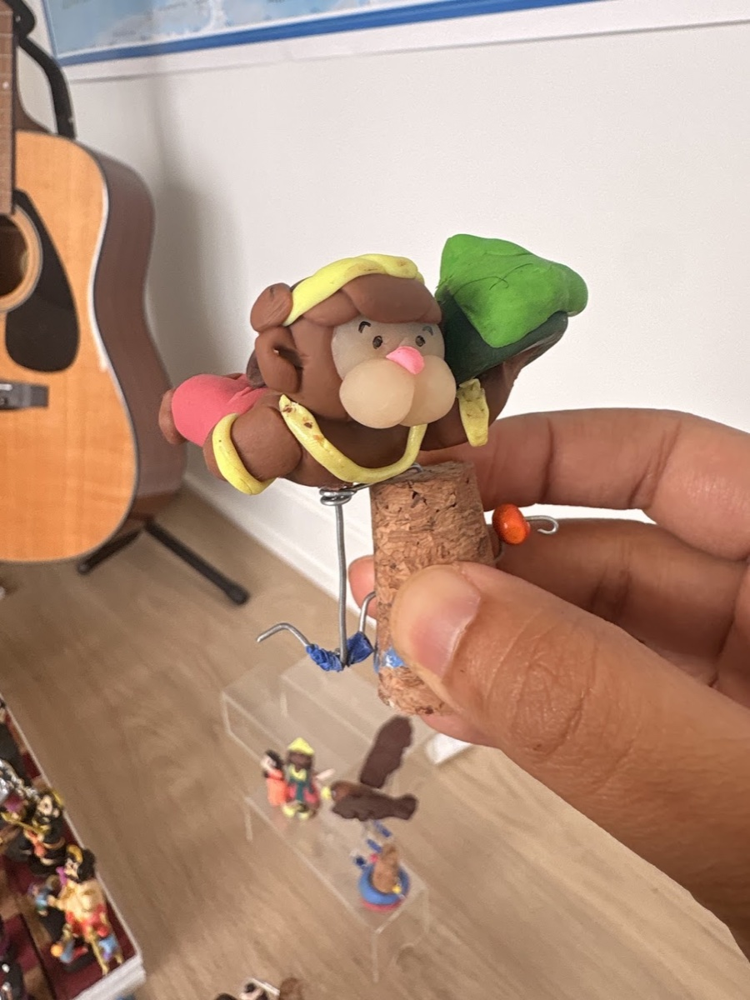
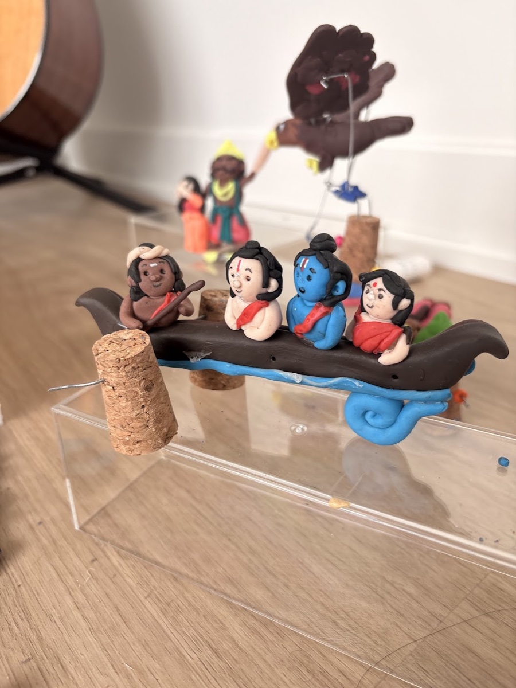
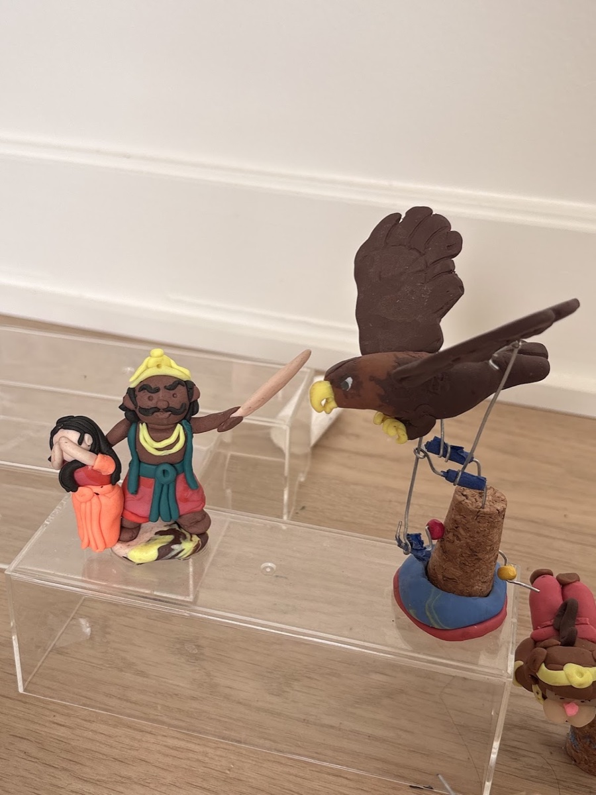

2024: Automata Mechanisms
2026 polymer clay remake
I first made these automata with paper for my 2024 Navaratri Golu. In 2026, I remade the pieces with polymer clay, using wire mechanisms mounted on cork to move the figures. The set shows three scenes from the Ramayana: Guhan helping Rama, Sita, and Lakshmana cross the Ganga by boat, Jatayu trying to rescue Sita from Ravana, and Hanuman carrying the mountaintop where the Sangeevini herb grows.
Work in progress


